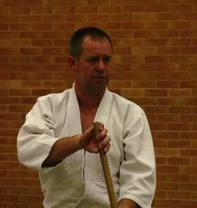
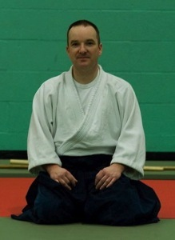
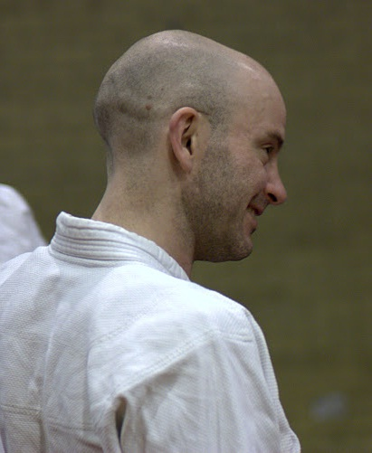
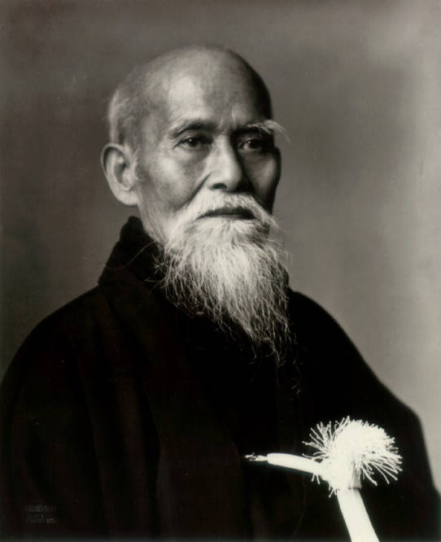
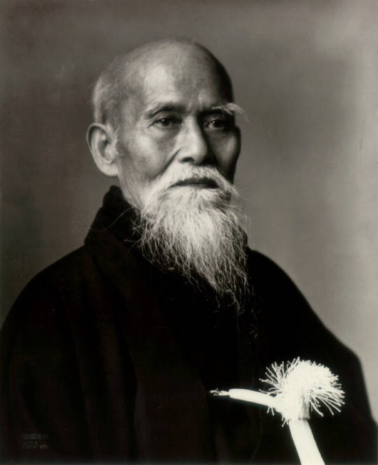

Welcome to Cocks Moors Woods Central Aikikai
Aikido classes have been running at Cocks Moors Woods Leisure Centre in Birmingham since the Centre opened in 1984. Cocks Moors Woods Central Aikikai is a strong dojo with many students, and is recognised nationally for its quality and high standards. It is affiliated to the British Birankai organisation under the technical direction of Master Chiba Sensei.
We are part of the Central Aikikai, which also includes Ei Oh Kan and Tudor Grange. We are also associated with Dornbirn Aikikai and Hohenems Aikikai in Austria. Please use the main menu at the top of the page to learn more about Aikido and the dojo. New beginners highly encouraged to take part! Click here for details.
BEGINNERS CLASSES STARTING ON FIRST THURSDAY OF THE MONTH 1930-2030.
BLACK BELT INSTRUCTION. ALL WELCOME
- 8.8.16 TG
- 10-11.8.16 CMW
- 15.8.16 TG
- 29.8.16 TG
- 31.8.16 CMW
Instructors

Sensei Mark Pickering
6th Dan, Shidoin and member of the British Birankai Teaching Committee. Chairman of Birankai Austria.

Sensei Stuart Lovering
Chief instructor 4th Dan Shidoin: Tudor Grange.

Sensei Andy Colclough
Assistant Instructor 3rd Dan Fukushidoin: Cocks Moors Woods

Sensei Jonathan Thomas
Assistant Instructor 1st Dan: Cocks Moors Woods
More information about instructors...
Information
Wednesdays
Time
Age
Class
19:30 - 20:30
Juniors (age 6 and above)
General Aikido
19:30 – 20:30
Adults
General Aikido
20:30 – 21:30
Adults
General Weapons
Thursdays
Time
Age
Class
18:15 - 19:15
Juniors (age 6 and above)
General Aikido and Weapons
19:30 – 20:30
Adults
Beginners Aikido
20:30 – 21:30
Adults
Beginners Weapons
Classes (two hour class)
Please note: After 3rd lesson Non Members will be asked to join the organisation.
Adults
£5.00 per night
Students / Unwaged
£4.00 per night
Junior BB members
£4.00 1 Hour
Family of 3 or more £10 when all family members are on the mat.
Junior non-BB members
£4.50 1 Hour for each of first 3 lessons.
Gradings
Family of 3 or more Grading fee of £5 each plus combined £10 total class rate.
Adults
£15 Plus Class Fee
Juniors
£5 Plus Class Fee
Memberships (per year)
Includes 3rd party Liability insurance.
Adult Waged
£45
Adult Unwaged/student
£25
Junior
£20
Address
Cocks Moors Woods Leisure Centre
Alcester Road South
Kings Heath
Birmingham
B14 6ER
Contact Mark
Email
mpickering8@googlemail.com
Phone number
0775 448 0805
We are delighted to be able to provide the opportunity for new beginners to take part in Aikido in the West Midlands, an outstanding way to improve fitness for somebody of any ability. Training vastly improves balance, agility and coordination as well as relieving mental health problems such as stress. Our dedicated teachers have years of experience and provide excellent guidance. Come and join us on your path to self defence and well being.
New starter class takes place every Thursday evening from 7.30pm till 8.30pm at Cocks Moors Woods Leisure Centre in Kings Heath at the cost of only 5 pounds for waged and 4.00 pounds for unwaged / students. At Cocks Moors Woods Aikido beginners are given a warm welcome with the assistance of one of our senior instructors, at a pace you can manage, and all members of the dojo provide care and support. We are happy to provide detailed information below to help provide a base of knowledge:
All that is required for a first training session is to arrive 20 minutes before training for a quick chat about your interests, and anything that might need to be taken into account during training.
If you have any queries or would like to declare interest in taking part please find contact details below. We hope to see you soon!
Junior classes are held twice a week at the leisure centre and children can start from the age of 6 years. Classes are popular and any child is welcome to come along and have a go. Our students find that, while they are having fun and learning the basics of Aikido, they are also developing self-confidence, discipline and respect for themselves and others. Classes involve Body Art (basic aikido movements), introduction to basic weapons and games.
Gradings are held two or three times a year where students have the opportunity to show what they have learnt and how they are developing, and to progress through the grading levels. All classes are led by fully qualified Coaches with enhanced CRB checks, PI insurance and Emergency First Aid. We have two Child Protection Officers and take the welfare of our students very seriously.
Date
Title
Venue
Region
Type
20/2/16
Spring Seminar
Warwick University Aikido Club
Coventry, Midilands
Regional
12 - 13/2/16
BB Spring course
Cocksmoors Woods Central Aikikai
Birmingham
National
5 - 10/5/15
20yrs Celebration
TBC
Portugal
International
4 - 11/6/16
Hombu
Japan
International
23 - 29/7/16
EU Summer School Camp
TBC
France
International
6 - 7/8/16
BB Summer Course
Harper Adams University
Newport Shrophire
National
13 - 20/8/16
UKA Summer school
Harper Adams University
Newport Shrophire
National
14 - 16/10/16
Weapons Course
TBC
Austria
International
TBC
BB Autumn course
TBC
TBC
National
5/11/16
Xmas Course
Cocksmoorswoods Central Aikikai
Birmingham
Local
3/12/16
Xmas Party
Britannnia Room Wythall community Association
Birmingham
Local
19/12/16
TG last class
Solihul
Local
21/12/16
CMW last class
Birmingham
Local
-
British Birankai
-
Birankai International and Birankai North America
-
Hombu Dojo Aikikai Foundation Aikido World Headquarters
-
Ei Oh Kan Dojo, Birmingham
-
Tudor Grange Dojo, Solihull
-
Ei Mei Kan dojo, Birmingham
-
London Aikikai – Traditional Aikido in London
-
Aikikai Dornbirn, Austria
-
Aikikai Hohenems, Austria
-
Nine Circles - A online shop for Japanese Budo equipment.
About Aikido

Aikido is the principle of non-resistance. Because it is non-resistant, it is victorious from the beginning. Those with evil intentions or contentious thoughts are instantly vanquished.
Aikido is the Japanese martial art that uses a system of holds, throws, and locks as its principal movements. The art focuses on controlling one’s ki (vital energy within the body that is centered in the abdominal region) to subdue an opponent. Aikido principles hold that the mind and body are one. When a person acts in this manner, great power is possible. By joining with the motion of an attack and taking control of its force, it is possible to redirect the power of the attack safely and effectively.
Aikido was developed in the early 20th century by Morihei Ueshiba (1883 - 1969); known to his students as O-Sensei (Great Teacher). A legendary master of several schools of martial arts, O-Sensei was also a deeply spiritual man. An early taste of war forged his opposition to the use of martial arts for destructive purposes. His pursuits of these passions led him to the development of Aikido, a discipline designed to control aggression and violence, as well as help people realise their full potential as individuals: physically, mentally and spiritually.
Sensei Mark Pickering
6th Dan, Shidoin and member of the British Birankai Teaching Committee. Chairman of Birankai Austria.
Sensei Stuart Lovering
Chief instructor 4th Dan Shidoin: Tudor Grange.
Sensei Andy Colclough
Assistant Instructor 3rd Dan Fukushidoin: Cocks Moors Woods
Sensei Jonathan Thomas
Assistant Instructor 1st Dan: Cocks Moors Woods
Wednesdays
| Time | Age | Class |
|---|---|---|
| 19:30 - 20:30 | Juniors (age 6 and above) | General Aikido |
| 19:30 – 20:30 | Adults | General Aikido |
| 20:30 – 21:30 | Adults | General Weapons |
Thursdays
| Time | Age | Class |
|---|---|---|
| 18:15 - 19:15 | Juniors (age 6 and above) | General Aikido and Weapons |
| 19:30 – 20:30 | Adults | Beginners Aikido |
| 20:30 – 21:30 | Adults | Beginners Weapons |
Classes (two hour class)
Please note: After 3rd lesson Non Members will be asked to join the organisation.
| Adults | £5.00 per night |
| Students / Unwaged | £4.00 per night |
| Junior BB members |
£4.00 1 Hour Family of 3 or more £10 when all family members are on the mat. |
| Junior non-BB members | £4.50 1 Hour for each of first 3 lessons. |
Gradings
Family of 3 or more Grading fee of £5 each plus combined £10 total class rate.
| Adults | £15 Plus Class Fee |
| Juniors | £5 Plus Class Fee |
Memberships (per year)
Includes 3rd party Liability insurance.
| Adult Waged | £45 |
| Adult Unwaged/student | £25 |
| Junior | £20 |
Address
Cocks Moors Woods Leisure Centre
Alcester Road South
Kings Heath
Birmingham
B14 6ER
Contact Mark
Email mpickering8@googlemail.com
Phone number 0775 448 0805
We are delighted to be able to provide the opportunity for new beginners to take part in Aikido in the West Midlands, an outstanding way to improve fitness for somebody of any ability. Training vastly improves balance, agility and coordination as well as relieving mental health problems such as stress. Our dedicated teachers have years of experience and provide excellent guidance. Come and join us on your path to self defence and well being.
New starter class takes place every Thursday evening from 7.30pm till 8.30pm at Cocks Moors Woods Leisure Centre in Kings Heath at the cost of only 5 pounds for waged and 4.00 pounds for unwaged / students. At Cocks Moors Woods Aikido beginners are given a warm welcome with the assistance of one of our senior instructors, at a pace you can manage, and all members of the dojo provide care and support. We are happy to provide detailed information below to help provide a base of knowledge:
All that is required for a first training session is to arrive 20 minutes before training for a quick chat about your interests, and anything that might need to be taken into account during training.
If you have any queries or would like to declare interest in taking part please find contact details below. We hope to see you soon!
Junior classes are held twice a week at the leisure centre and children can start from the age of 6 years. Classes are popular and any child is welcome to come along and have a go. Our students find that, while they are having fun and learning the basics of Aikido, they are also developing self-confidence, discipline and respect for themselves and others. Classes involve Body Art (basic aikido movements), introduction to basic weapons and games.
Gradings are held two or three times a year where students have the opportunity to show what they have learnt and how they are developing, and to progress through the grading levels. All classes are led by fully qualified Coaches with enhanced CRB checks, PI insurance and Emergency First Aid. We have two Child Protection Officers and take the welfare of our students very seriously.
| Date | Title | Venue | Region | Type |
|---|---|---|---|---|
| 20/2/16 | Spring Seminar | Warwick University Aikido Club | Coventry, Midilands | Regional |
| 12 - 13/2/16 | BB Spring course | Cocksmoors Woods Central Aikikai | Birmingham | National |
| 5 - 10/5/15 | 20yrs Celebration | TBC | Portugal | International |
| 4 - 11/6/16 | Hombu | Japan | International | |
| 23 - 29/7/16 | EU Summer School Camp | TBC | France | International |
| 6 - 7/8/16 | BB Summer Course | Harper Adams University | Newport Shrophire | National |
| 13 - 20/8/16 | UKA Summer school | Harper Adams University | Newport Shrophire | National |
| 14 - 16/10/16 | Weapons Course | TBC | Austria | International |
| TBC | BB Autumn course | TBC | TBC | National |
| 5/11/16 | Xmas Course | Cocksmoorswoods Central Aikikai | Birmingham | Local |
| 3/12/16 | Xmas Party | Britannnia Room Wythall community Association | Birmingham | Local |
| 19/12/16 | TG last class | Solihul | Local | |
| 21/12/16 | CMW last class | Birmingham | Local |
{kind=link}
{kind=link}
- British Birankai
- Birankai International and Birankai North America
- Hombu Dojo Aikikai Foundation Aikido World Headquarters
- Ei Oh Kan Dojo, Birmingham
- Tudor Grange Dojo, Solihull
- Ei Mei Kan dojo, Birmingham
- London Aikikai – Traditional Aikido in London
- Aikikai Dornbirn, Austria
- Aikikai Hohenems, Austria
- Nine Circles - A online shop for Japanese Budo equipment.
About Aikido

Aikido is the principle of non-resistance. Because it is non-resistant, it is victorious from the beginning. Those with evil intentions or contentious thoughts are instantly vanquished.
Aikido is the Japanese martial art that uses a system of holds, throws, and locks as its principal movements. The art focuses on controlling one’s ki (vital energy within the body that is centered in the abdominal region) to subdue an opponent. Aikido principles hold that the mind and body are one. When a person acts in this manner, great power is possible. By joining with the motion of an attack and taking control of its force, it is possible to redirect the power of the attack safely and effectively.
Aikido was developed in the early 20th century by Morihei Ueshiba (1883 - 1969); known to his students as O-Sensei (Great Teacher). A legendary master of several schools of martial arts, O-Sensei was also a deeply spiritual man. An early taste of war forged his opposition to the use of martial arts for destructive purposes. His pursuits of these passions led him to the development of Aikido, a discipline designed to control aggression and violence, as well as help people realise their full potential as individuals: physically, mentally and spiritually.
Aikido is the principle of non-resistance. Because it is non-resistant, it is victorious from the beginning. Those with evil intentions or contentious thoughts are instantly vanquished.
Aikido is the Japanese martial art that uses a system of holds, throws, and locks as its principal movements. The art focuses on controlling one’s ki (vital energy within the body that is centered in the abdominal region) to subdue an opponent. Aikido principles hold that the mind and body are one. When a person acts in this manner, great power is possible. By joining with the motion of an attack and taking control of its force, it is possible to redirect the power of the attack safely and effectively.
Aikido was developed in the early 20th century by Morihei Ueshiba (1883 - 1969); known to his students as O-Sensei (Great Teacher). A legendary master of several schools of martial arts, O-Sensei was also a deeply spiritual man. An early taste of war forged his opposition to the use of martial arts for destructive purposes. His pursuits of these passions led him to the development of Aikido, a discipline designed to control aggression and violence, as well as help people realise their full potential as individuals: physically, mentally and spiritually.